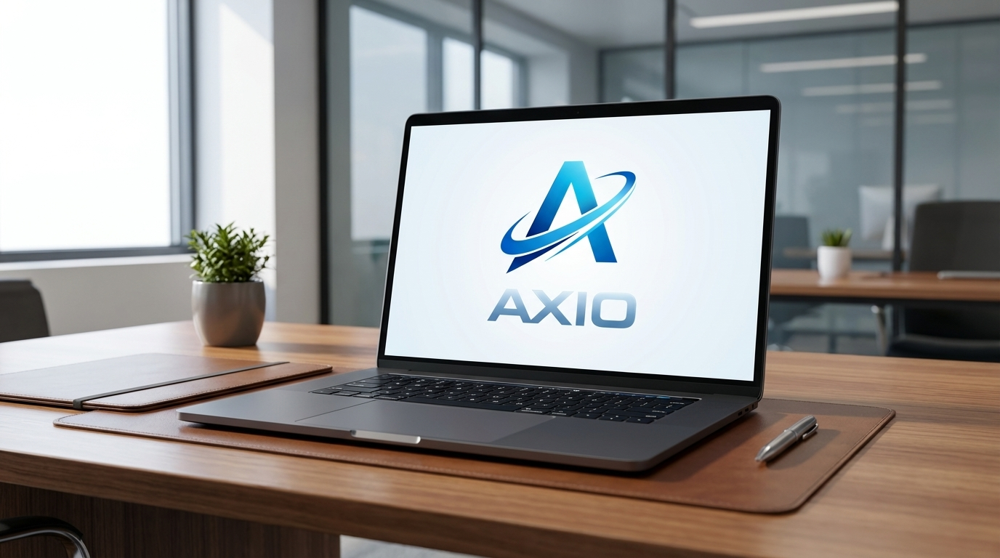

FinTech · Digital Assets · Compliance
AXIO Exchange (Axiom Flow Markets)
A technology-driven exchange concept built around market access, institutional discipline, investor education, and the evolution of regulated digital asset infrastructure.

A technology-driven exchange concept built around market access, institutional discipline, investor education, and the evolution of regulated digital asset infrastructure.
AXIO Exchange (Axiom Flow Markets) presents a modern framework for connecting financial technology, digital asset education, compliance awareness, and infrastructure thinking. The site is organized to support search visibility while giving users clear answers about the platform narrative, market positioning, and long-term development logic.
A structured homepage for users, search engines, and AI answer engines to understand the AXIO Exchange story quickly.

Clear positioning around disciplined financial operations and transparent market practices.

Digital infrastructure, data systems, and platform intelligence for modern asset access.
Investor learning content that explains markets without unnecessary complexity.
A forward-looking approach to tokenized assets, RWA narratives, and financial connectivity.